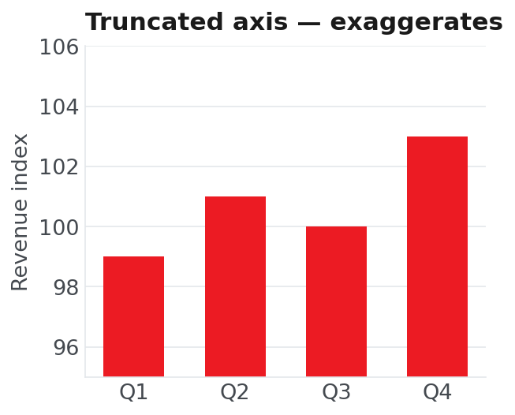
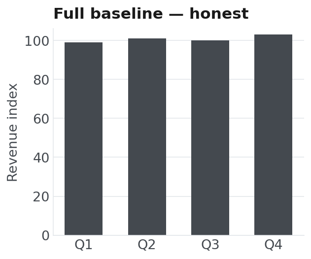

The goal is to turn data into information, and information into insight.Carly Fiorina · former CEO, Hewlett-Packard
Four pillars, one journey
The language of data work — types, logic, functions and the data stack.
▶ Demo 1 · load a CSVStructured vs unstructured, the shape of data, and the four types of analytics.
The 80% of the job: cleaning, reshaping and taming messy banking data.
▶ Demo 2 · clean a CSVEDA, choosing charts, honest visuals, and the traps that fool smart people.
What is data science?
- It lives where three skills overlap — Drew Conway's Venn.
- Programming to wrangle and automate at scale.
- Math & statistics to reason about uncertainty.
- Domain expertise — here, how banking actually works.
- Coding + domain but no stats = the danger zone: confident, plausible, wrong.
Expertise
Data is the deluge — value is the dividend
A retail bank logs every transaction, login and transfer — years of high-frequency data waiting to be turned into insight.
What you can build with these skills
Risk dashboards
Live exposure, limits and KPIs the business actually watches.
Cashflow forecasting
Project demand and liquidity from historical transaction flows.
Product recommendations
Suggest the next best product for each customer segment.
Fraud & anomaly detection
Flag transactions that don't fit the normal pattern, in real time.
Churn prediction
Spot customers likely to leave — early enough to act.
Document & text (NLP)
Natural Language Processing (NLP) — read contracts, complaints and chats at scale.
The five facets of data science
Ask
A precise, answerable question.
Collect
Source and store the right data.
Explore
Wrangle, visualise, find shape.
Model
Quantify, predict, test.
Communicate
Turn findings into a decision.
Most beginners over-invest in the middle. The pros know the value is at the edges — the question and the story.
Basic Python
The language of data work — and the four-layer stack that turns it into a data platform.
Readable, batteries-included, everywhere
- Low-ceremony syntax — you spend time on the problem, not the language.
- A mature library for every step of the data lifecycle.
- A glue language: wraps fast C/Rust/CUDA behind simple APIs.
- The lingua franca of data & AI — new research ships here first.
- A huge community — most problems already have a documented answer.
import polars as pl
# three lines, one real answer
df = pl.read_csv("transactions.csv")
fraud = df.filter(pl.col("is_fraud"))
print(fraud["amount"].sum())
# → 1_284_905.50 (flagged this month)Three lines load a CSV and total this month's flagged fraud — that economy is the whole pitch.
Variables, types & the four containers
# scalars: the atoms
customer_id = 1021 # int
balance = 8420.50 # float
segment = "premier" # str
is_active = True # booltxns = [a, b, c]{"id": 1021}(lat, lon){"ID","SG"}Model a customer as a dict; a column of customers as a list of dicts — one step from a Polars DataFrame.
From loops to comprehensions
premier = []
for c in customers:
if c["segment"] == "premier":
if c["active"]:
premier.append(c["id"])# one declarative line
premier = [
c["id"] for c in customers
if c["segment"] == "premier"
and c["active"]
]Define once, call many
- A function names a piece of logic so you write it once.
- Keep them small and pure: output depends only on inputs.
- Pure functions are easy to test and safe to reuse.
- The same idea becomes a column transform and, later, a feature.
def risk_band(score: int) -> str:
"""Map a credit score to a band."""
if score >= 750: return "low"
if score >= 650: return "medium"
return "high"
# reuse across a whole column (an expression)
df = df.with_columns(
pl.col("score").map_elements(risk_band).alias("band"))Four layers turn Python into a data platform
modelschartsDataFramesarraysEach layer speaks the same columnar shapes — learn the DataFrame once, reuse it everywhere.
A DataFrame is a spreadsheet you can program
| id | date | amount | product | channel | is_fraud |
|---|---|---|---|---|---|
| 1021 | 03-02 | 42.10 | savings | mobile | False |
| 1022 | 03-02 | 1804.0 | loans | branch | False |
| 1023 | 03-03 | 12.75 | cards | mobile | False |
| 1024 | 03-03 | 9650.0 | deposit | web | True |
| statistic | id | amount |
|---|---|---|
| count | 50000 | 50000 |
| null_count | 0 | 0 |
| mean | 26020 | 312.6 |
| min | 1021 | 0.50 |
| max | 51020 | 9980 |
Load a CSV, see it instantly
Polars reads a banking CSV (comma-separated values) into a DataFrame — then .head(), .shape and .describe() answer "what's in here?" in seconds.
- 1Read 50k transactions into a DataFrame
- 2
.head()— peek at the first rows - 3
.shape— confirm size (rows, cols) - 4
.describe()— instant summary stats
Data Science Concepts
The vocabulary of the field — data types, the shape of a dataset, and the ladder of analytics.
Structured vs unstructured data
Rows, columns, and a target
- Every row is one observation — here, one customer.
- Every column is a feature — an attribute you measured.
- One column is often the target — what you want to predict.
- Features in, target out — the setup for ML next session.
| customer | tenure | balance | products | churned |
|---|---|---|---|---|
| 1021 | 34 | 8,420 | 3 | No |
| 1022 | 5 | 120 | 1 | Yes |
| 1023 | 61 | 26,050 | 4 | No |
| 1024 | 9 | 340 | 1 | Yes |
Four types of analytics — value rises with difficulty
Descriptive
Dashboards, KPIs, summaries.
Diagnostic
Drill-down, correlation, root cause.
Predictive
Forecasts, ML models, scoring.
Prescriptive
Recommendations, optimisation.
Find the signal in the noise
- Real data is a cloud, not a line.
- The signal is the real pattern; the noise is randomness.
- Miss a real signal → you act too late.
- See a pattern in pure noise → you act on nothing.
- Statistics is how we tell them apart — honestly.
Data Wrangling
The unglamorous 80% — finding the mess in real data and turning it into something you can trust.
Wrangling is most of the job
of real data work is preparation
Loading, cleaning and reshaping data — before any chart or model. The glamorous modelling is the thin slice on top.
Indicative: surveys put cleaning at ~60%, ~80% including collection. Clean data is made, not found.
What messy data looks like
Missing values
Blanks, nulls, NaN. Decide: drop, fill or flag — never ignore.
Duplicates
Repeated rows quietly inflate counts and bias every total.
Wrong types
"1,000" as text; dates stored as strings. Normalise early.
Inconsistent categories
"ID", "Indonesia", "idn" — one thing, many spellings.
Outliers
Real signal or data error? Investigate before deleting.
Inconsistent formats
Dates, currencies, casing — the same value, many shapes.
Every mess maps to a Polars expression
.drop_nulls() · .fill_null().unique().cast().str.strip_chars() · .str.to_lowercase().group_by().agg().join()Tidy data: the analysis-ready shape
| product | Q1 | Q2 | Q3 |
|---|---|---|---|
| savings | 120 | 140 | 160 |
| loans | 80 | 95 | 110 |
| product | quarter | value |
|---|---|---|
| savings | Q1 | 120 |
| savings | Q2 | 140 |
| loans | Q1 | 80 |
Eager vs lazy: plan, then run
# each line executes immediately
df = pl.read_csv("transactions.csv")
df = df.filter(pl.col("amount") > 0)
out = df.group_by("product").agg(
pl.col("amount").sum())# build a plan, run it once
out = (pl.scan_csv("transactions.csv")
.filter(pl.col("amount") > 0)
.group_by("product")
.agg(pl.col("amount").sum())
.collect()) # ← optimise + runFrom messy CSV to one clean table
| product | amount |
|---|---|
| deposit | 8,940,210 |
| loans | 4,512,770 |
| savings | 2,108,440 |
| cards | 1,284,905 |
Inspect → fix → reshape → summarise
A messy CSV becomes one trustworthy summary — and the finale runs as a .lazy() query Polars optimises into a single pass.
- 1
.null_count()— find the missing - 2
.fill_null()/.drop_nulls() - 3
.cast()+.unique()— types & dupes - 4
.lazy()…collect()— optimised total
Analytics Principles
From clean data to honest insight — explore it, chart it truthfully, and tell the story that drives a decision.
Always look at your data first
Mean ≫ median is the skew talking. The tail is where fraud and errors hide.
Start from the question, then pick the chart
Bar chart
A value across categories. Sort by value; start the axis at zero.
Line chart
A value over time. Time on the x-axis; don't overload series.
Scatter plot
Two numbers together. Add a trend line; correlation ≠ causation.
Histogram
Shape, center, spread of one variable. Mind your bin count.
Stacked bar
Parts of a whole. Prefer bars over pie — length beats angle.
Heatmap
Pairwise correlations at once. Spot clusters fast.
Good charts clarify — bad charts mislead


Correlation ≠ causation
- Two series moving together may share a hidden cause.
- Ice-cream sales & drownings rise together — the cause is summer.
- It's the danger zone: domain + code, no statistics.
- Always ask: could a third factor explain it?
- And: would this still hold on new data?
Lead with the “so what”
- 1Lead with the conclusion
Open with the decision, not the methodology.
- 2One chart, one message
If it needs a paragraph to explain, it's two charts.
- 3End with a recommendation
Not a data dump — a clear next action.
- 4Know your audience
The exec wants the so-what; the analyst wants the how.
One question, all the way through
Ask
Who'll churn next quarter?
Acquire
Pull txns + tenure.
Wrangle
Clean, build features.
Explore
Low-engagement = churn.
Model
A churn score (next).
Communicate
One offer, right segment.
The four pillars, recapped
Python & its stack → data concepts → wrangling (80% of it) → analytics & honest interpretation. Each builds on the last.
Practice next
Open a notebook, load a real CSV, and run the four-step clean. The only way to learn this is to do it.
Six habits that outlast any tool
Frame the question first
Define the decision and success metric before touching data. (CRISP-DM step 1.)
Look before you model
EDA first — always visualise distributions and relationships before any model.
Tidy & validated data
One variable per column; add explicit data-quality checks you can re-run.
Reproducible by default
Version-control code and data with Git; notebooks must re-run top-to-bottom.
Efficient, lazy pipelines
In Polars, prefer expressions and lazy scans — let the optimiser prune & push down.
Iterate & document
The workflow is a loop toward deployment — record decisions. This is where MLOps begins.
Data → information → insight
What we covered
- Python & the four-layer data stack
- The shape of data & types of analytics
- Wrangling: the 80% that makes data trustworthy
- EDA, honest charts & the traps to avoid
Next session
- Machine Learning & MLOps
- From describing data to learning from it
- Bring your data-quality mindset — models amplify it